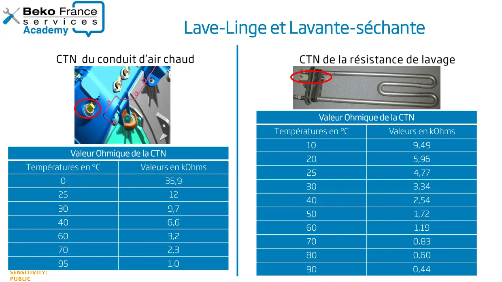

Valeurs sondes Lave linge & Lavante Séchante

SENSITIVITY:PUBLICLave-Linge et Lavante-séchanteValeur Ohmique de la CTNTempératures en °CValeurs en kOhms035,92512309,7406,6603,2702,3951,0Valeur Ohmique de la CTNTempératures en °CValeurs en kOhms109,49205,96254,77303,34402,54501,72601,19700,83800,60900,44
1 / 1